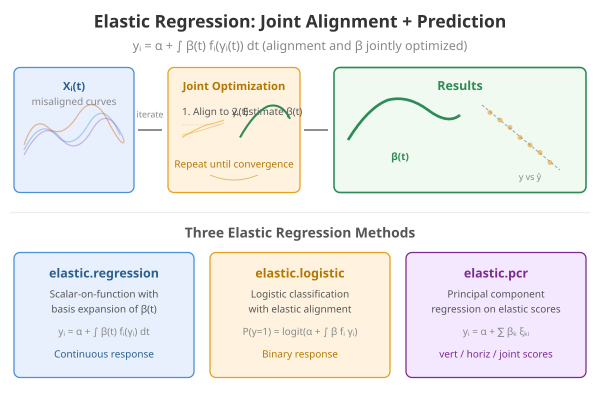
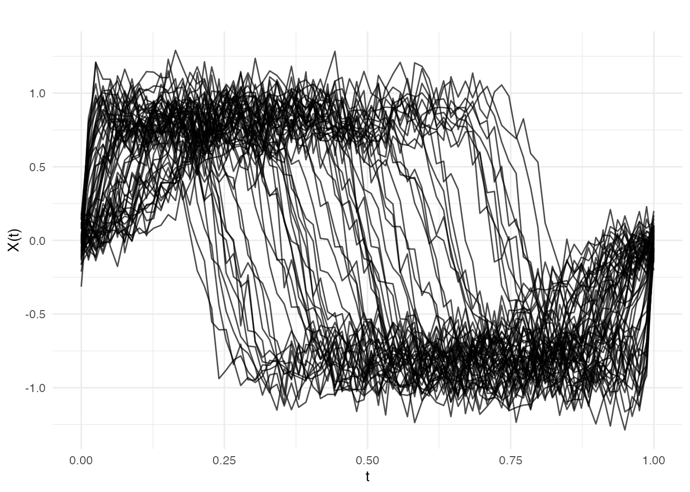
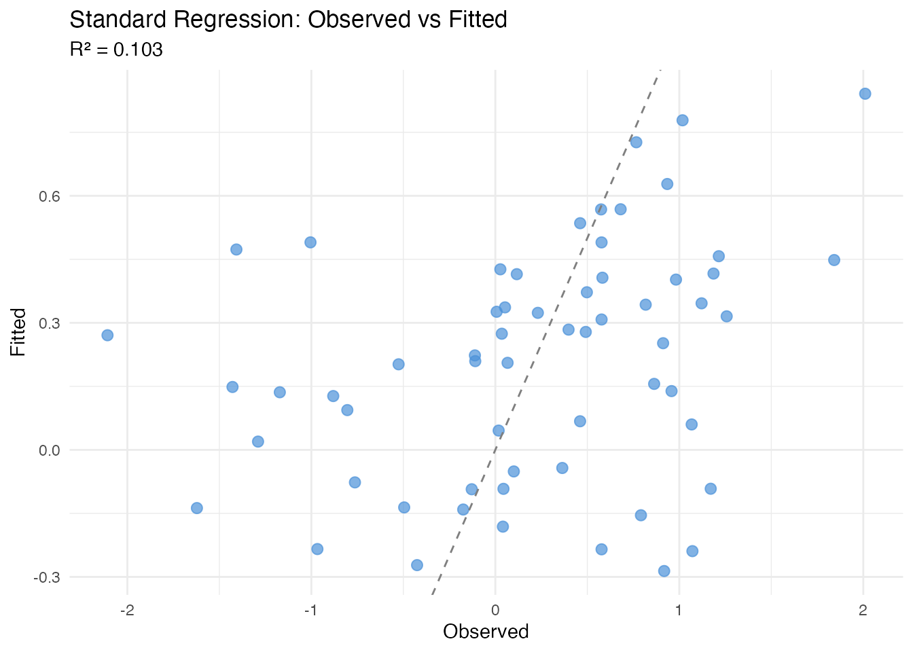
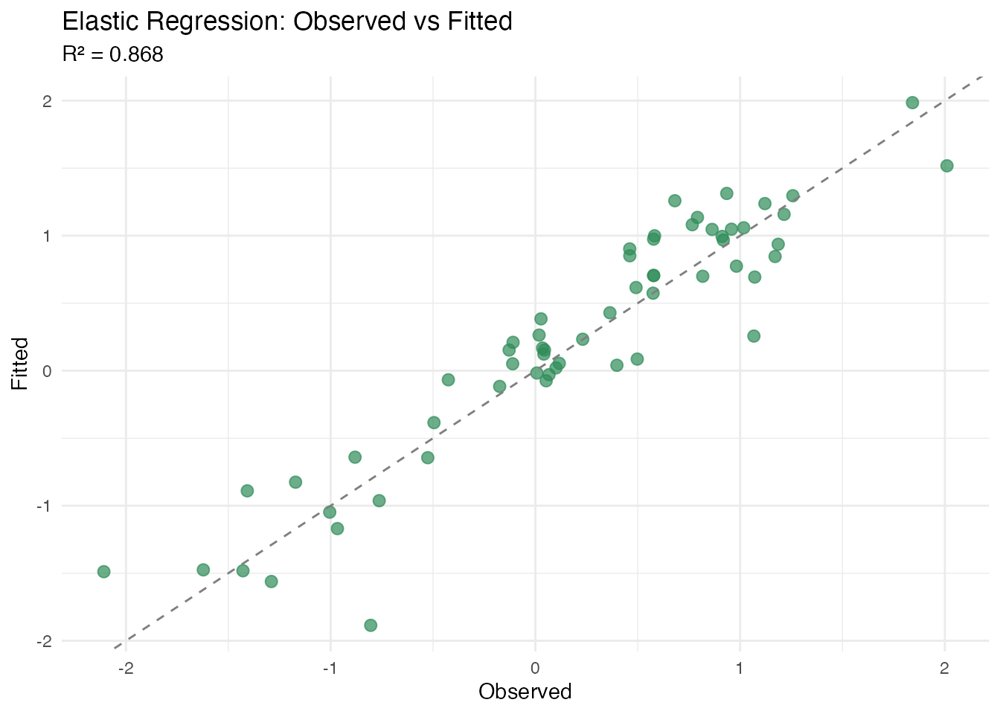
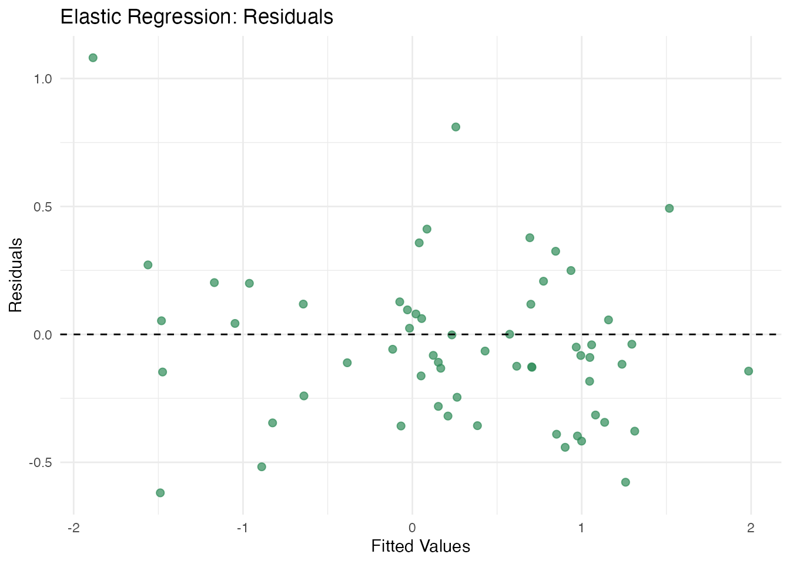
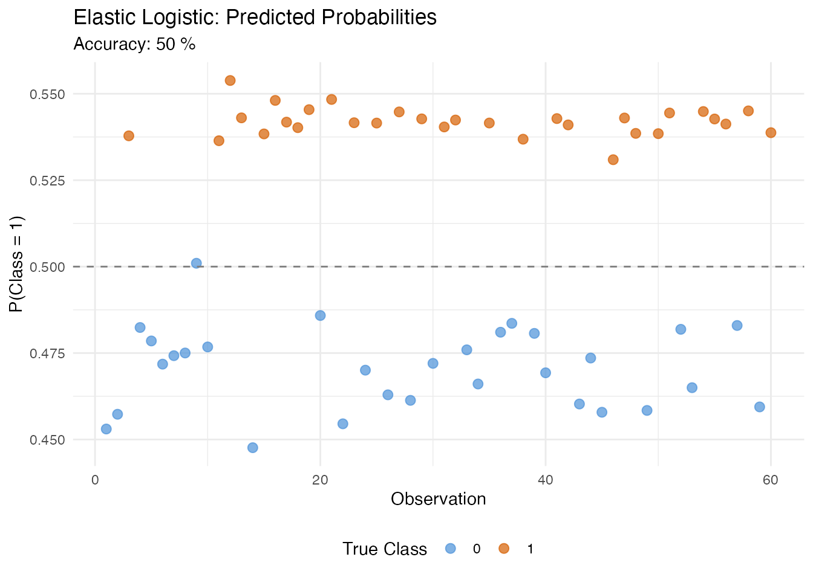
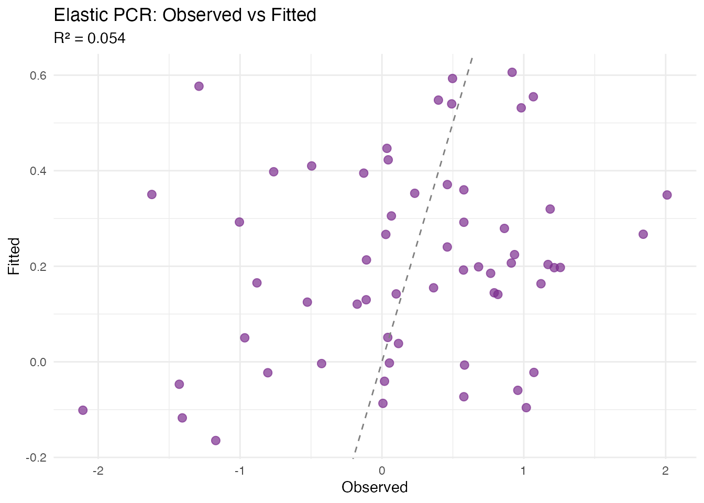
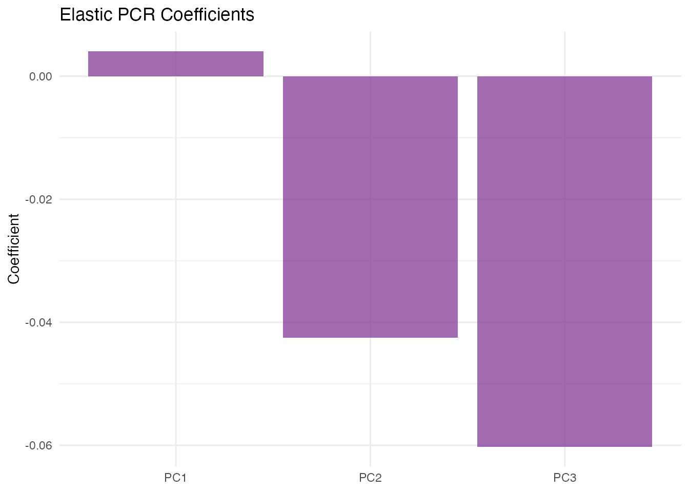
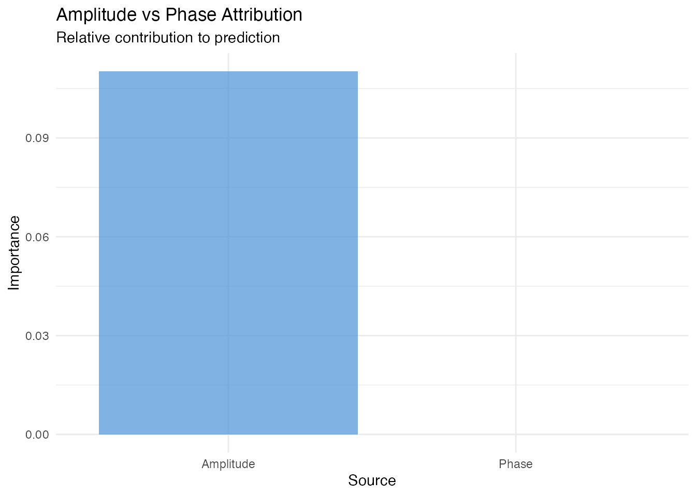

Introduction
Functional regression often assumes curves are meaningfully aligned before analysis. However, when functional predictors contain phase variability (differences in timing or alignment), standard regression methods blend amplitude and phase variation, reducing predictive power and interpretability of the coefficient function.
Elastic regression addresses this by jointly estimating the alignment warping functions and regression coefficients, separating phase from amplitude variation.

Mathematical Framework
Standard Functional Linear Model
The scalar-on-function model is
When curves are misaligned, the integral mixes amplitude and phase effects, and the estimated becomes blurred and uninterpretable.
Elastic Regression Model
Elastic regression introduces warping functions :
The algorithm alternates between:
- Alignment step: Fix , update warping functions to minimize the residual sum of squares via the Fisher-Rao elastic metric.
- Regression step: Fix warping functions, re-estimate and from the aligned curves.
Convergence is measured by the relative change in SSE. The SRVF representation ensures the alignment respects the elastic geometry (Srivastava et al., 2011).
Simulated Data: Warped Template with Amplitude Signal
We simulate a scenario that strongly favours elastic regression: all curves share a common shape (template), but each is nonlinearly warped by a random diffeomorphism. The response depends on a subtle amplitude perturbation that is invisible to standard FPCA because the dominant variation is phase:
n <- 60
m <- 80
t <- seq(0, 1, length.out = m)
template <- function(s) sin(2 * pi * s) + 0.3 * sin(6 * pi * s)
X <- matrix(0, n, m)
y <- numeric(n)
for (i in 1:n) {
# Random nonlinear warp via Beta CDF
a <- runif(1, 0.5, 2.0)
b <- runif(1, 0.5, 2.0)
gamma <- pbeta(t, a, b)
# Amplitude perturbation (the signal)
delta <- rnorm(1, 0, 0.4)
# Warped and scaled template
X[i, ] <- (1 + 0.2 * delta) *
approx(t, template(t), xout = gamma, rule = 2)$y +
rnorm(m, sd = 0.1)
# Response depends on amplitude perturbation
y[i] <- 2 * delta + rnorm(1, sd = 0.3)
}
fd <- fdata(X, argvals = t)
plot(fd, main = "Functional Predictors: Nonlinearly Warped Template",
xlab = "t", ylab = "X(t)")
Standard FPCA spends nearly all its components capturing the dominant warp variation, leaving little capacity for the amplitude signal that drives the response.
Standard Regression (Baseline)
fit_std <- fregre.lm(fd, y, ncomp = 5)
cat("Standard fregre.lm R\u00b2:", round(fit_std$r.squared, 4), "\n")
#> Standard fregre.lm R²: 0.1027
df_std <- data.frame(Observed = y, Fitted = fit_std$fitted.values)
ggplot(df_std, aes(x = Observed, y = Fitted)) +
geom_point(color = "#4A90D9", size = 2.5, alpha = 0.7) +
geom_abline(slope = 1, intercept = 0, linetype = "dashed", color = "gray50") +
labs(title = "Standard Regression: Observed vs Fitted",
subtitle = paste("R\u00b2 =", round(fit_std$r.squared, 3)),
x = "Observed", y = "Fitted")
Standard regression fails because the FPCs capture warp variation rather than the amplitude signal the response depends on.
Elastic Scalar-on-Function Regression
elastic.regression() jointly estimates alignment and
regression, removing the phase variation before fitting:
fit_elastic <- elastic.regression(fd, y, ncomp.beta = 5, lambda = 0.01,
max.iter = 20, tol = 1e-3)
cat("Elastic regression R\u00b2:", round(fit_elastic$r.squared, 4), "\n")
#> Elastic regression R²: 0.868
cat("Iterations:", fit_elastic$n.iter, "\n")
#> Iterations: 20
plot(fit_elastic, type = "fit")
plot(fit_elastic, type = "beta")
plot(fit_elastic, type = "residuals")
Comparison
comp <- data.frame(
Method = c("Standard (fregre.lm)", "Elastic Regression"),
R2 = c(fit_std$r.squared, fit_elastic$r.squared),
RMSE = c(sqrt(mean(fit_std$residuals^2)),
sqrt(mean(fit_elastic$residuals^2)))
)
print(comp)
#> Method R2 RMSE
#> 1 Standard (fregre.lm) 0.1026623 0.8166588
#> 2 Elastic Regression 0.8680056 0.3132134Elastic Logistic Classification
For binary classification:
y_bin <- as.numeric(y > median(y))
fit_logistic <- elastic.logistic(fd, y_bin, ncomp.beta = 5, lambda = 0.01,
max.iter = 15, tol = 1e-3)
cat("Accuracy:", round(fit_logistic$accuracy * 100, 1), "%\n")
#> Accuracy: 98.3 %
plot(fit_logistic, type = "probabilities")
Elastic PCR
Compare vertical, horizontal, and joint PCA methods:
fit_vert <- elastic.pcr(fd, y, ncomp = 3, pca.method = "vertical")
fit_horiz <- elastic.pcr(fd, y, ncomp = 3, pca.method = "horizontal")
fit_joint <- elastic.pcr(fd, y, ncomp = 3, pca.method = "joint")
comp_pcr <- data.frame(
Method = c("Vertical", "Horizontal", "Joint"),
R2 = c(fit_vert$r.squared, fit_horiz$r.squared, fit_joint$r.squared)
)
print(comp_pcr)
#> Method R2
#> 1 Vertical 0.06631723
#> 2 Horizontal 0.01171428
#> 3 Joint 0.06631723
plot(fit_joint, type = "fit")
plot(fit_joint, type = "coefficients")
Amplitude vs Phase Attribution
elastic.attribution() quantifies how much of the
prediction accuracy is attributable to amplitude variation (shape after
alignment) versus phase variation (warping), using elastic PCR scores.
This helps decide whether alignment is worthwhile for a given
dataset.
attr <- elastic.attribution(fd, y, ncomp = 3, pca.method = "vertical",
n.perm = 50, seed = 42)
cat("Amplitude importance:", round(attr$amplitude_importance, 4), "\n")
#> Amplitude importance: 0.1163
cat("Phase importance:", round(attr$phase_importance, 4), "\n")
#> Phase importance: 0
df_attr <- data.frame(
Source = c("Amplitude", "Phase"),
Importance = c(attr$amplitude_importance, attr$phase_importance)
)
ggplot(df_attr, aes(x = Source, y = Importance, fill = Source)) +
geom_col(alpha = 0.7) +
scale_fill_manual(values = c("Amplitude" = "#4A90D9", "Phase" = "#D55E00")) +
labs(title = "Amplitude vs Phase Attribution",
subtitle = "Relative contribution to prediction",
y = "Importance") +
theme(legend.position = "none")
In our simulated data, the response depends on amplitude
perturbations, so elastic.attribution() correctly
identifies amplitude as the dominant predictive source.
When to Use Elastic Regression
- Phase variability dominates: when nonlinear warping is the primary source of variation, standard FPCA wastes components on phase
- Interpretability important: want a clear coefficient function after removing phase
-
Classification with misalignment: use
elastic.logistic()for groups with different peak timings -
Attribution needed:
elastic.attribution()can quantify amplitude vs phase contributions before committing to a full elastic model
Avoid elastic regression if curves are already well-aligned or if the response depends on phase variation itself.
References
Srivastava, A., Wu, W., Kurtek, S., Klassen, E. and Marron, J.S. (2011). Registration of functional data using the Fisher-Rao metric. arXiv preprint arXiv:1103.3817.
Tucker, J.D., Wu, W. and Srivastava, A. (2013). Generative models for functional data using phase and amplitude separation. Computational Statistics & Data Analysis, 61, 50–66.
Ramsay, J.O. and Silverman, B.W. (2005). Functional Data Analysis. 2nd ed. Springer.
See Also
-
vignette("elastic-alignment")— alignment without regression -
vignette("articles/scalar-on-function")— standard scalar-on-function regression -
vignette("elastic-fpca")— elastic FPCA for amplitude/phase separation